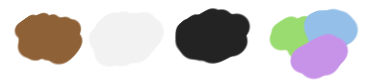

Creating Your Therapet
Step One:
Choose a base color! Therapets come in several bright, cheerful colors. You don't have to pick these exact shades, but it should be somewhat close!
The color you pick should be bright, but not overly saturated. Brighter than pastel, but not eye burning!
You don't have to color pick these.

No Neons or Grey are allowed to be used as base colors!
Brown, White, Black, and Pastel colors are 'rare' coat colors. You can't use them when making your own Terapet, but you might be able to get them some other way! ;D
Step Two:
Draw your Therapet! If you're unsure about the anatomy, refer to the image below. Don't worry about skill, just do your best!
Step Three:
Of course you don't want your Therapet to look like everyone else's. You can choose one color for its markings. Each base color has rules for what colors you can choose as the 'accent' color, so pick wisely! The colors you can choose from have the same rules as for the base color (no neons/grey/pastel, etc.)
Red, Yellow, and Blue cannot be paired in any way with each other for base/accent colors
Orange, Green, and Purple cannot be paired in any way with each other for base/accent colors
Pink can go with anything!
Step Four:
Make some Markings! You can add markings to anywhere on your Therapet, as long as they are large areas! Don't make thin lines, stripes, shapes, etc.
Examples of good placements:
Step Five:
Therapets make dust, and it can come in all sorts of shapes and colors! Pick a shape and color for your Therapet's dust!
Dust is always pale in color, and comes in only simple shapes. It can only be one color and shape per Therapet (though rare Therapets have been known to have Dust consisting of up to two shapes and/or three colors!) You can pick from pale versions of the base colors, plus white.
Step Six:
Put your image onto the Template and post it to the Approval Journal. A Mod or Admin will reply and let you know if you need to make any changes. Once it's approved, you're almost ready!
Step Seven:
Make a reference image for your Therapet's owner! You can have more than one owner, or an owner for each of your Therapets. The reason we need this is so we know when it's fair to count the Owner Bonus when counting your Sprinkles! They don't have to be approved by the group, they just need to be recorded somewhere.
Step Eight:
Get a reference sheet up for your Therapet, and set up your Sprinkle Tracker! You can use the approval image if you want, or make a new one. In this tracker you should link your Therapet's Owner, and keep track of your Sprinkle earnings and spending.
That's it! One happy fluffbutt!